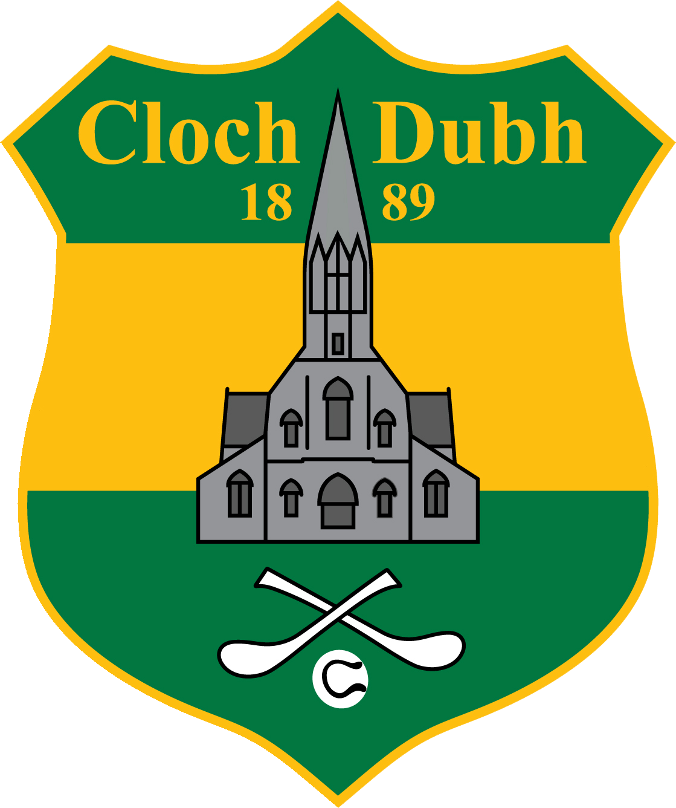
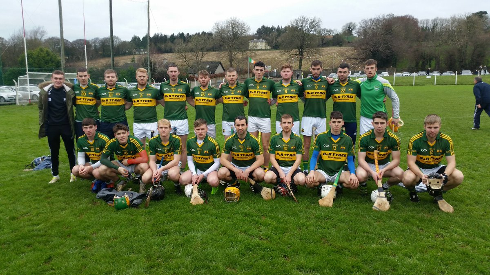

Cloughduv Hurling Club
2003-Present
Cloughduv is one of the oldest Hurling Clubs in the County. With the first recorded match in the parish dating back to 1863. At the end of that Century, Cloughduv were hosting one of the major competitions within t he County called the Ryecourt Tournament, in which all the leading teams in the County participated. Ryecourt provided the Club with an early home and although the club moved to other locations down through the years, it is ironic that we are now back once again in Ryecourt with our modern sports complex.
The 1950's saw the emergence of an underage phenomenon, when an unprecedented three School Shield Counties came to Cloughduv. Three Mid Cork Minor Titles followed in the 1960's with a Minor County in 1967.
The Club today is playing in its 18th County Final between Junior and Intermediate stretching back to the victory of the 1911 Intermediate team up to the defeat of our Junior A team in 2009.
Without doubt the greatest years on the field of play for Cloughduv were between 1970 and 1986, with victory in Junior A 1970, Intermediate Victories in 1973, 1983 and 1986 and runner up in 1981 and 1984 at Intermediate level. Couple that with 7 Intermediate League Titles and 2 years at Senior Level.
For Cloughduv Hurling Club the challenges of the future will be faced with the same resolve that our first chairman William Walsh and his fellow officers and members endures back in 1884 and that in years to come we will continue that victorious refrain......
So hand me down my hurley
And Jersey Green and Gold
The cry has come
Come on Cloughduv
Think of the days of old.
(extracted from cloughduv.com)

This is a link to the Cloughduv GAA webpage.
I joined Cloughduv Hurling Club when I was only four years old. At the time I had know idea how notorious and
feared this club was around the county.It was an honour to be apart of this great hurling club.
Achievements
Went unbeaten in u16 winning the league, county league, East championship and the county
Was voted Team of the Month in November 2016
